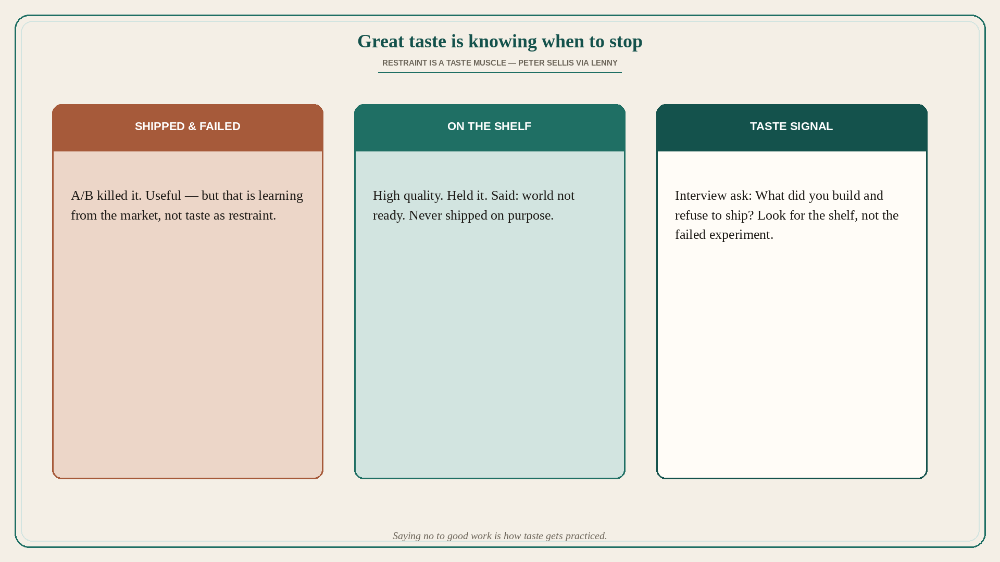

Great taste is knowing when to stop
Source: Lenny Rachitsky (@lennysan) quoting Peter Sellis (@petersellis)
original post
What it claims
Great taste is knowing when to stop. Peter Sellis (via Lenny): interview for taste by asking about high-quality things someone built and never shipped — not A/B fails, but work they held and decided “the world’s not ready for this.” A shelf of restrained, high-quality ideas signals the muscle of saying no.
Why it matters for a PO
POs constantly choose what not to put on the Product Backlog and what not to pull into a Sprint. Shipping everything that “works in demo” floods users and burns capacity. Taste as restraint separates market learning (tested, killed) from deliberate non-ship of good work — and that same signal helps hire and coach people who can kill polish without waiting for a failed experiment.
3 takeaways
- Failed experiments teach the market; shelf work teaches restraint.
- Ask candidates (and yourself): what high-quality thing did you refuse to ship?
- Practice saying no to good ideas that are wrong for now — that is taste training.
Practice this week
Write a one-page “shelf list”: three high-quality ideas or prototypes you (or the team) could ship but will not this quarter, with one sentence each on why the world (or the segment) is not ready. Review it in refinement; keep at least one item deliberately unshipped instead of squeezing it into the Sprint “because it is almost done.”